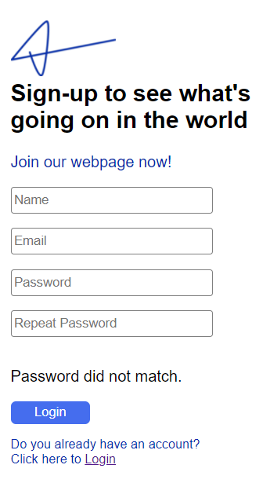
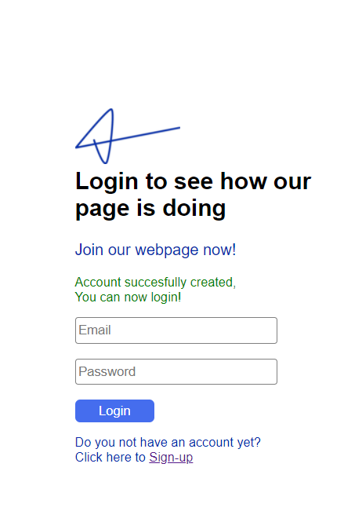
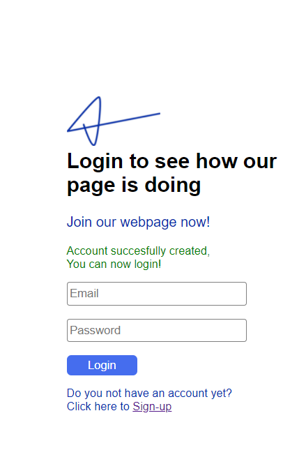
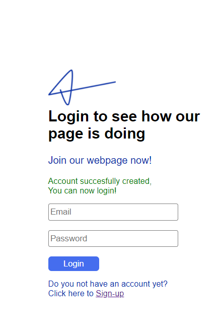

Ik vond het maken van mijn database heel leuk om te doen,
ik kreeg hierdoor ook meer zelfvertrouwen in het maken van onderandere websites, omdat je werkelijk iets maakte wat ook werkte.
Zelf was ik super tevreden met het eind resultaat van de styling en de verschillende log-in pagina's.
Ik kan dit aspect verder ontwikkelen door meer te letten op de styling van een pagina,
dus meer user 'friendly' en dat het er ook aantrekkelijker uit ziet.
Ik ben erg blij met de resulaten van al mijn websites ook al heb ik niet voor alles een voldoende behaald.
Maar met de hoeveel lessen over html/css die we gehad hebben vindt ik dat ik en mooi resultaat heb neergezet.
Ik kan dit goed inzetten in andere opdrachten omdat ik toch wel weet dat ik het kan, maar dat ik het met andere opdrachten dan ook moet doen.
Ik leg de lat vaak nog iets te hoog en dat kan mijn zelfvertrouwen soms wel eens in de weg staan.
Hieronder zie je hoe de log-in pagina van de database eruit ziet met de verschillende log-in pagina's.
Zelfvertrouwen


 

